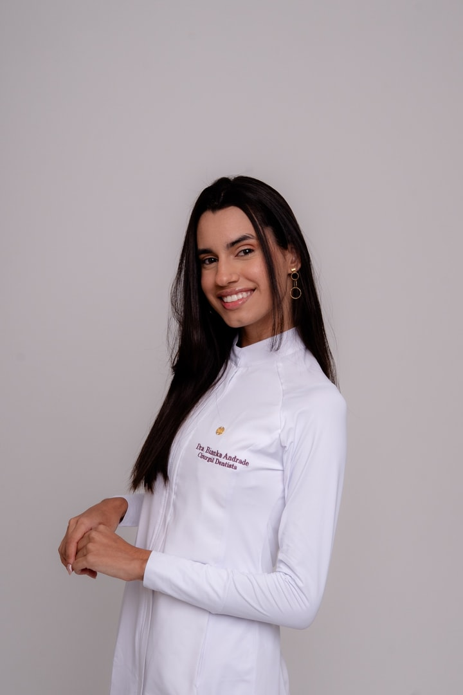
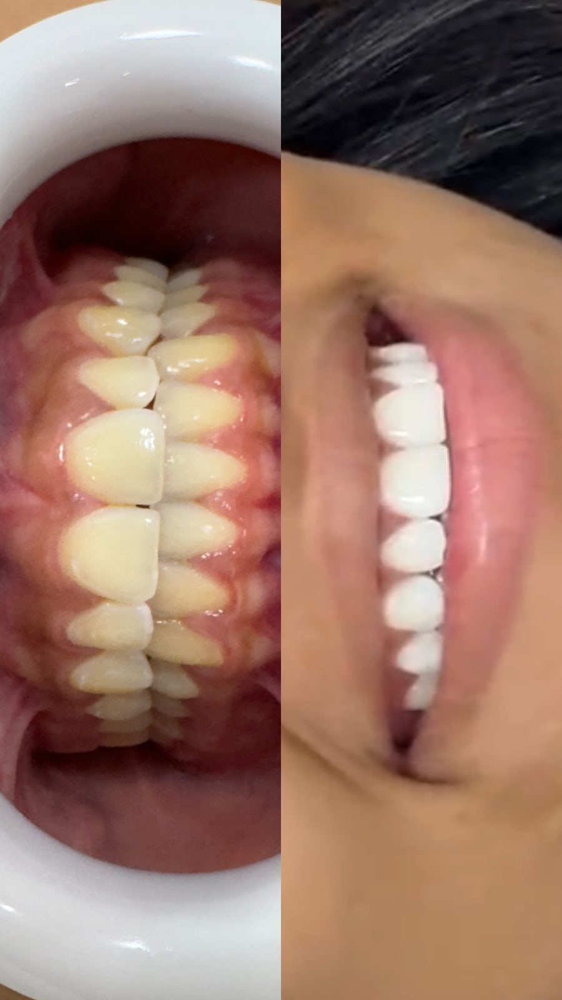
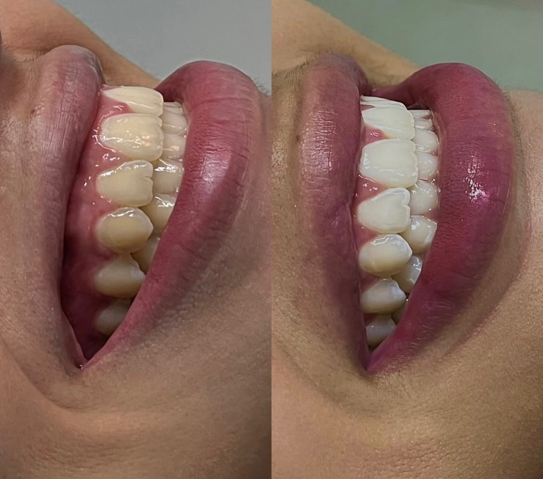
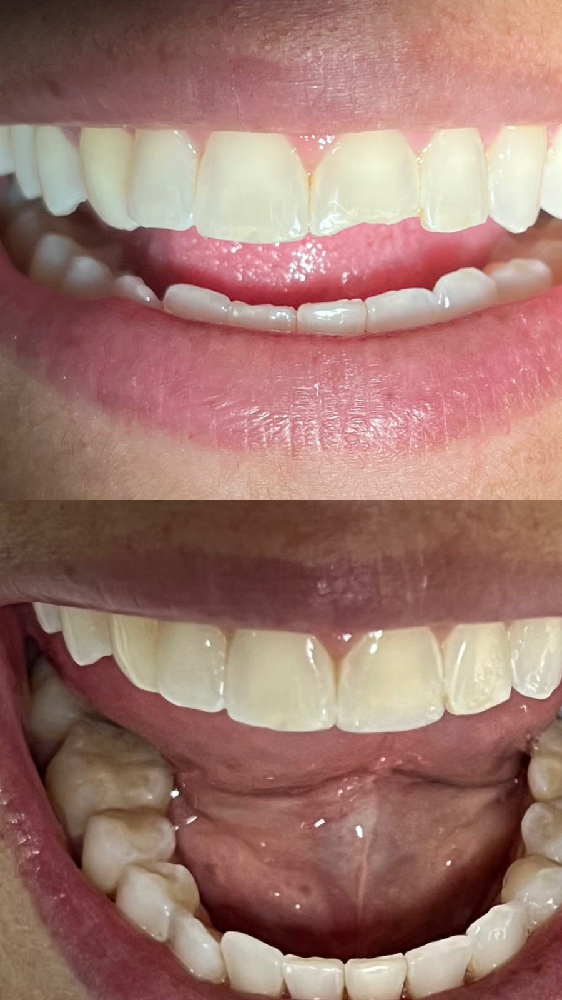
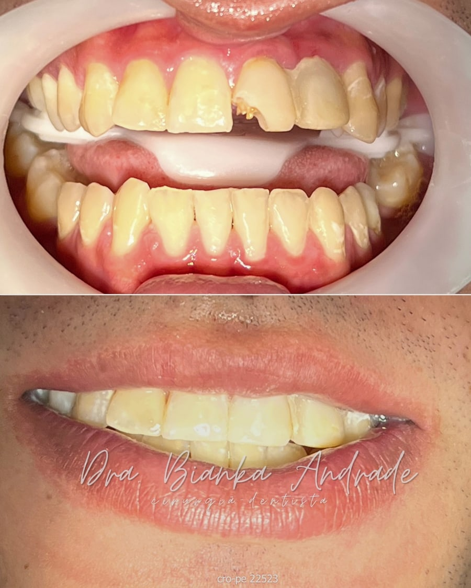
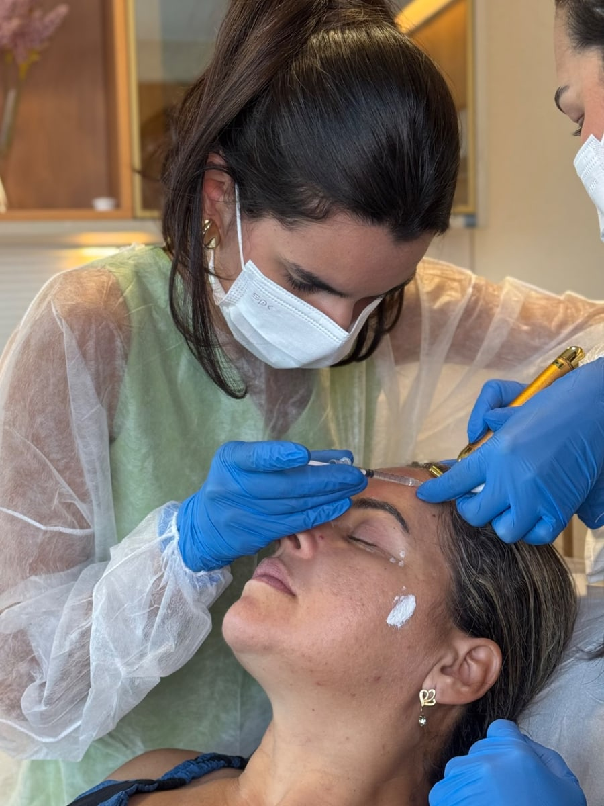

Prevenção e rotina
- Avaliação e check-up
- Limpeza / profilaxia
- Restaurações
- Gengiva (periodontia)
Dentista em Camaragibe · PE
Atendimento atencioso e acolhedor, com foco em facetas em resina, estética e cuidado para todas as idades, inclusive para quem tem medo de dentista.

Sou apaixonada pela odontologia e dedico meu trabalho a devolver confiança no sorriso, com atenção a cada detalhe. Atendo crianças, adolescentes, adultos, idosos e gestantes, inclusive quem chega com medo de dentista.
Meu olhar é clínico e estético: escuto o que você espera, registro o sorriso em fotos, planejo com cuidado e explico as possibilidades antes de começar. O objetivo é um resultado natural, preciso e feito para você.
Tratamento em destaque
As facetas em resina permitem corrigir formato, cor e harmonia dos dentes com um resultado natural e personalizado. Cada caso começa com alinhamento de expectativas, fotos e um plano claro das possibilidades.
É o tratamento que mais me move: unir técnica, precisão e o cuidado de quem escuta o paciente do começo ao fim.
Forma e cor pensadas para o seu rosto, sem exagero.
Você vê o caminho do tratamento antes de começar.
Acabamento cuidadoso, com olhar perfeccionista.
Conversamos sobre o que é possível no seu caso.
Da prevenção à estética do sorriso, com um plano pensado para você.
O consultório faz atendimento de urgência. Mande uma mensagem contando o que está sentindo.
Falar agoraCasos de estética e cuidado do consultório.




Imagens publicadas com autorização por escrito dos pacientes. Cada tratamento é individual e os resultados variam de pessoa para pessoa.
Um encontro para alinhar expectativas e montar o seu plano.
Conversamos sobre o que te incomoda e o que você espera do sorriso.
Examino o que precisa ser feito e registro o sorriso em fotos.
Se for necessário, solicito exames para complementar o planejamento.
Explico as opções de tratamento com clareza, antes de qualquer decisão.
Escuto com calma e trato cada detalhe do seu caso com cuidado.
Busco um acabamento preciso, especialmente em estética e facetas.
Ambiente acolhedor para todas as idades, inclusive quem tem medo.
Fotos e expectativas alinhadas para você entender o caminho.
Atendimento particular, com possibilidades e valores claros antes de começar.
Formação contínua em resina, ortodontia e harmonização orofacial.
“Atenciosa, perfeccionista e acolhedora.”
As três palavras que os pacientes usam para descrever a Dra. Bianka

Atendimento particular, com transparência nos valores. Em breve, opções de plano.
Dra. Bianka Andrade · CRO-PE 22523
Dra. Marcella Vieira · CRO-PE 22610
Quando bem indicadas e bem executadas, as facetas em resina preservam a estrutura dental e permitem ajustes com o tempo. Na avaliação, eu explico o que é possível no seu caso e o cuidado necessário depois do tratamento.
Não. Feito com avaliação profissional, o clareamento é seguro para o esmalte. Pode haver sensibilidade passageira, controlada com orientação e produtos adequados.
Sim. Explico cada etapa, vou no seu ritmo e alinhamos tudo antes de começar. O acolhimento faz parte do atendimento.
Alinhamos expectativas, avaliamos o que precisa ser feito, tiramos fotos e, se necessário, solicitamos documentação. Também apresento as possibilidades de tratamento com clareza.
Hoje o atendimento é particular. Em breve haverá opções de plano; enquanto isso, os valores e as formas de pagamento ficam claros antes de qualquer procedimento.
Sim. Atendo crianças, adolescentes, adultos, idosos e gestantes, com uma abordagem adaptada para cada fase.
Mande uma mensagem e agende sua avaliação. Eu respondo pessoalmente.